All in One View
Content from Introduction
Last updated on 2026-06-19 | Edit this page
Overview
Questions
- Why is training on a real HPC challenging for workshop instructors?
- What hardware is needed to build a mini-HPC for training?
Objectives
- Explain the challenges of using a real HPC for training purposes
- List the minimum hardware components needed for a Raspberry Pi mini-HPC
The first thing to do is to get all learners to plug in the hardware for their cluster. On its very first boot, the Pi automatically expands the root filesystem to fill the SD card. This can take a minute or two, during which the network interface will not yet be up.
This is a good time to deliver the lesson introduction. By the time you have finished, the Pi will be ready to connect to.
When running a workshop to teach learners how to use an HPC, an instructor is immediately presented with a few problems:
- Very few users ever get to see an HPC in real life and it is left to imaginations and sci-fi movies to visualise what an HPC is. To many this is quite a scary concept.
- Training on a “real” HPC can cause learners to be anxious that they might “break” something.
- Access to an HPC needs to be arranged. This is not always a trivial task as the use of HPC resources can be quite restricted in terms of who are allowed to use a specific HPC.
- Workshop attendees often do not read their emails requesting them to create accounts before they turn up for the workshop which results in instructors having to create accounts on the day. Apart from quite often delaying the start of the workshop, it is also not always possible for instructors to create the user accounts on the day.
- HPC resources are always in demand and running a workshop on a “real” HPC takes resources away from “real” processes running at the time.
- HPCs typically have to be connected to via the Internet. Any issues with accessing the Internet will affect the workshop.
- If an HPC is heavily used or if someone runs a job on the login node, learners might not be able to log in or there are significant delays in getting jobs into queues which again affects the timing of the workshop.
All these mentioned issues (and probably more) can be addressed by having a dedicated HPC for training. But usually “real” HPCs are very expensive and it wouldn’t be feasible to purchase typical high-end HPC hardware just for a training setup. However, it is completely possible to use low-end hardware to create a cluster that will run almost all the required software to learn how to use an HPC.
Minimal requirements
- Raspberry Pi (RPi) 3-5 2GB+ single board computers (SBC): 1 for the head node, plus as many nodes as as you want
- A multiport Netgear switch (as many ports as Rasberry Pis)
- 10BaseT Cat6 ethernet cables (1 per Rasberry Pi)
- Power supplies for each Rasberry Pi (alternatively: use a PoE switch to power all Rasberry Pis)
- A 8GB flash drive for shared storage
- A 32GB SD card to boot the main node from
- Cooling device (e.g. USB desktop fan)
Hardware connections
The diagram below shows how the components connect. The login node
has two network interfaces: eth0 connects to the internal
switch, and wlan0 connects to the router so learners can
reach the cluster over WiFi.
%%{init: {"themeVariables": {"edgeLabelBackground": "transparent"}} }%%
graph TD
Mains[Mains socket] --> PSU[Power strip]
PSU -->|USB-A to barrel| Switch["Network switch<br/>■ ■ □ □ □"]
Switch -->|ethernet| node01
PSU -->|USB-C| node01["node01: login node"]
PSU -->|USB-C| nodeN["node02 (to nodeNN): compute"]
Switch -->|ethernet| nodeN
Router[WiFi router] -->|wlan0| node01
Laptops[Learner laptops] -->|WiFi| Router
style Mains fill:orange, stroke:orange, color:black
style PSU fill:orange, stroke:orange, color:black
style Switch fill:steelblue, stroke:steelblue, color:white
style Router fill:steelblue, stroke:steelblue, color:white
style node01 fill:seagreen, stroke:seagreen, color:white
style nodeN fill:seagreen, stroke:seagreen, color:white
style Laptops fill:gray, stroke:gray, color:white
linkStyle 0,1,3,4 stroke:orange, stroke-width:4px
linkStyle 2,5 stroke:steelblue, stroke-width:4px
linkStyle 6,7 stroke:darkorchid, stroke-width:4pxOptional
- Example of casing:
- 3D printed DIN Rail stand
- 3D printed RPi cases
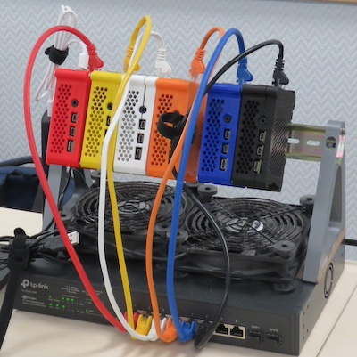
The first CarpentriesOffline MiniHPC, pixie, created
with Raspberry Pis!
- A mini-HPC using Raspberry Pis solves common HPC training challenges: cost, restricted access, internet dependency, and resource contention
- The minimum hardware is one or more Raspberry Pi 4s (2GB+), a network switch, ethernet cables, SD cards, and a USB storage device
Content from Preparing an SD Card
Last updated on 2026-06-19 | Edit this page
Overview
Questions
- How do you write an OS image to a Raspberry Pi SD card?
- What configuration can be applied to the SD card before first boot?
Objectives
- Download and install the Raspberry Pi Imager tool
- Select the correct OS image for the Raspberry Pi
- Pre-configure hostname, user credentials, SSH, and WiFi settings before writing the image
The process of downloading the imager, getting students to flash it to the Pi, and navigating permissions errors on managed machines, means that this section can take some time. Consider pre-flashing SD cards for learners and skipping this section. If you do wish to run it, be prepared for this to take a while, and ensure you have enough helpers on-hand to assist with the software step.
If pre-flashing cards, consider setting up a multi-SD flashing rig using a USB-C hub with sufficient capacity, multiple fast SD card readers (USB-3 at minimum), fast SD cards (e.g. microSDHC with U3 speed rating at minimum), to flash multiple cards simultaneously. Software such as hypriot/flash can be useful for this purpose as it allows you to batch script and customise Pi images on the command line, rather than manually operating the GUI.
Every computer needs to load an operating system when you switch it on. Therefore it will usually have a default place where it will look for an operating system in the first place. The process of loading the operating system is called booting. In general, if someone tells you to reboot your computer it means to switch is off and switch it back on again so that the operating system can be loaded from scratch. In the case of your desktop or laptop computers you will have a hard drive built into the computer or alternatively you might be able to boot from a USB device.
In the case of the Raspberry Pi its default booting device is an SD card. The orignal Rasberry Pi used a full-size SD card but from the RPi2 micro-SD cards are used. SD cards are available in various capacities, ie. the amount of information that can be stored on it. A basic operating system for the Pi will take about 3GB but you will also need space for all the Carpentries lesson files and other software that you want to make available to the learners.
Usually when you buy a RPi you can also buy an SD card with the operating system pre-loaded. Alternatively you can buy an empty SD card and prepare it yourself. Preparing the SD card involves downloading an image of the operating system (and there are various versions available). We will also download and use the Raspberry Pi Imager software to write the image to the SD card.
Internet connectivity might prove to be a problem during this workshop so your instructor might bring an image along that can be copied or perhaps provide pre-prepared microSD cards.
The Raspberry Pi can run several operating systems including several flavours of Linux. The official Raspberry Pi OS is based on Debian Linux.
If you have not already done so you have to download and install the Raspberry Pi Imager. Using your browser, navigate to the Raspberry Pi download page. You should now be able to select the download for your operating system. Click on the appropriate link and save the installation file to your computer. The web page will provide further information for installing the software on your computer. Once the installation is complete you should be able to run the Imager which will open with the following screen:
Creating an SD card image: step-by-step
Setting up a Raspberry Pi
The Raspberry Pi imager software is updated frequently, so these screenshots may not exactly match what you see. This guide is up to date as of June 2026. The official Set up your SD card tutorial on the Raspberry Pi website is updated more frequently.
When using the The Raspberry Pi Imager, select the Device and OS.
The OS selection should be Raspberry Pi OS (other) ->
Raspberry Pi OS Lite (64-bit).
First, select the device:
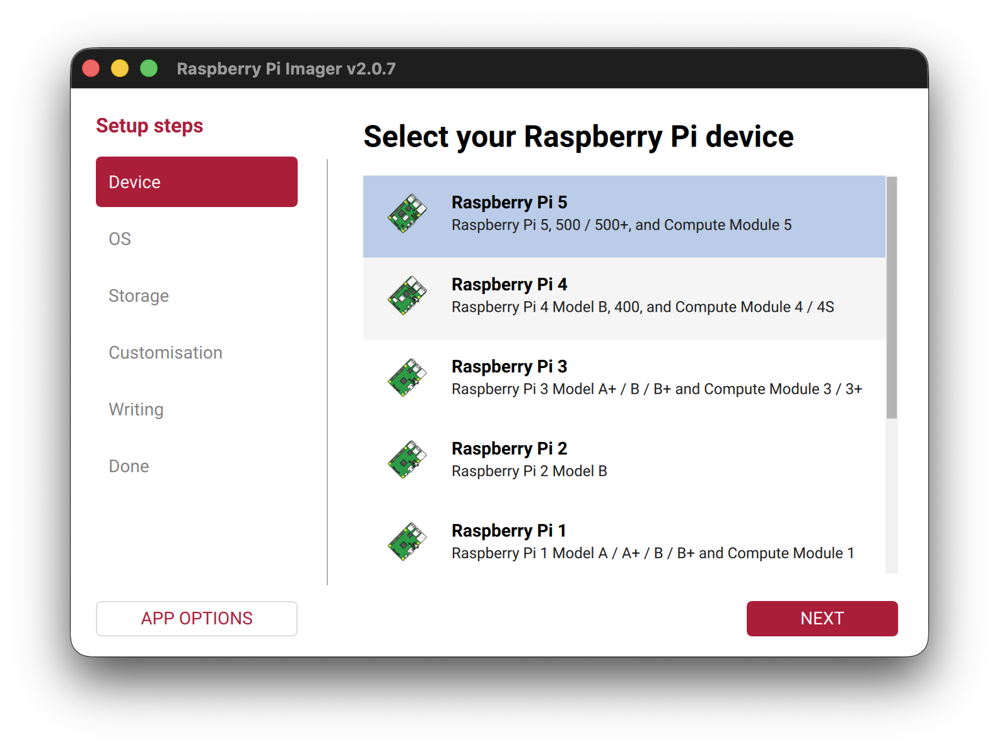
Selecting the OS is a two step process:
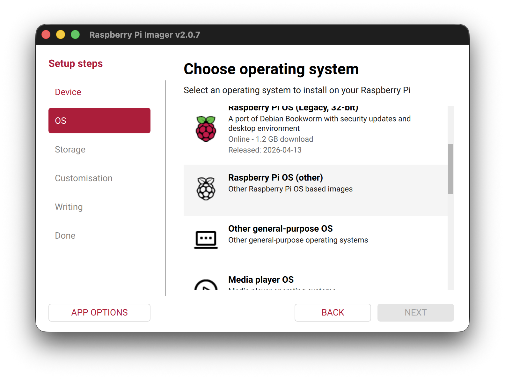
We want the OS with no desktop environment: use
Raspberry Pi OS Lite (64-bit):
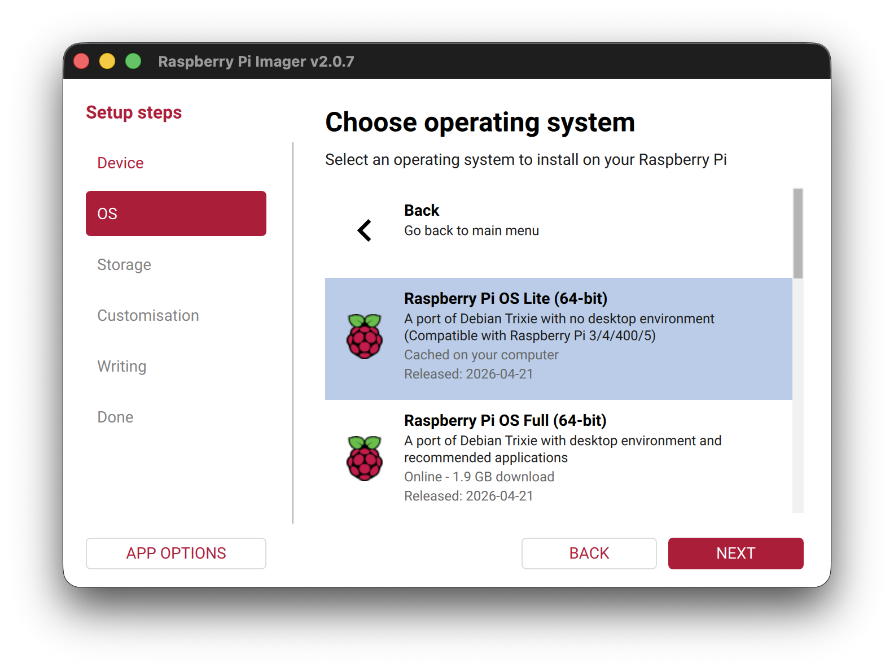
After this, please select the sdcard you would like to flash the
image on, then press NEXT.
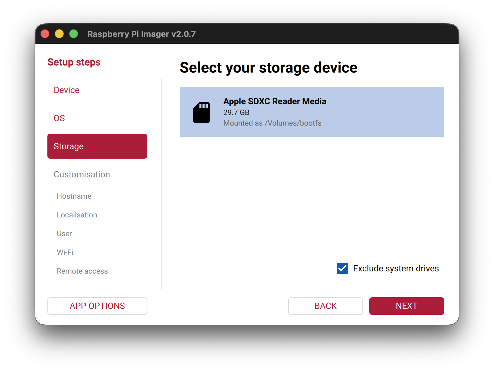
The following configuration options can be defined for your set-up such that your OS is pre-configured upon first boot. This is useful as it means we can complete some of the initial configuration before flashing the image, without a screen and keyboard for the Pi.
At this point, we can enter the hostname:
Hostname:
node01
Repeating this for the second Pi, we will use a different hostname
e.g. node02.
Check the label on your Pis for the hostname to use.
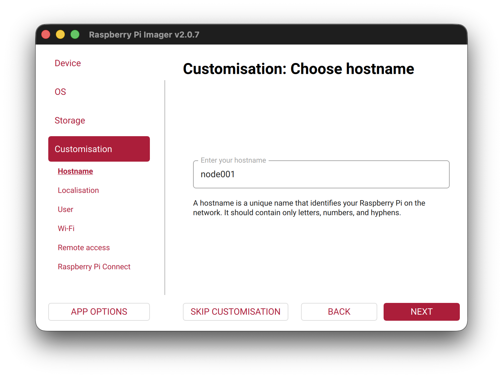
In the Localisation screen, select options for United Kingdom / London.
Next, set the username and password that will be used to log into the
Pi using the ssh command.
- Username:
pixie - Password:
0nl1n3
Tip
We’ve noticed occasional issues using the login name pi
on fresh Rasbian Lite image: it takes you round in circles back to a
login prompt! We’ll use a different name to be sure here.
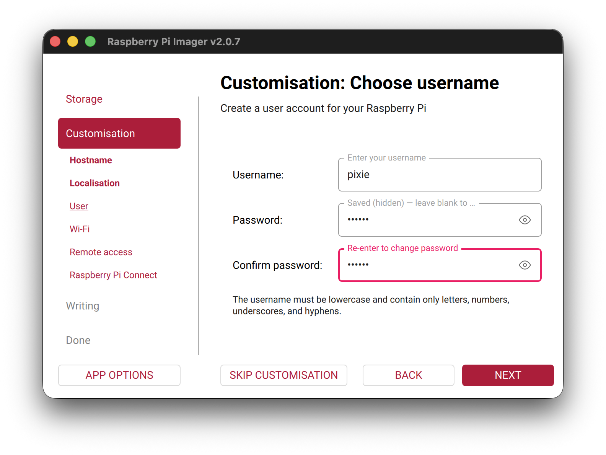
Customisation: Choose Wi-Fi: next, enter your WiFi details.
For our workshop, we are using the network
CarpentriesOffline.
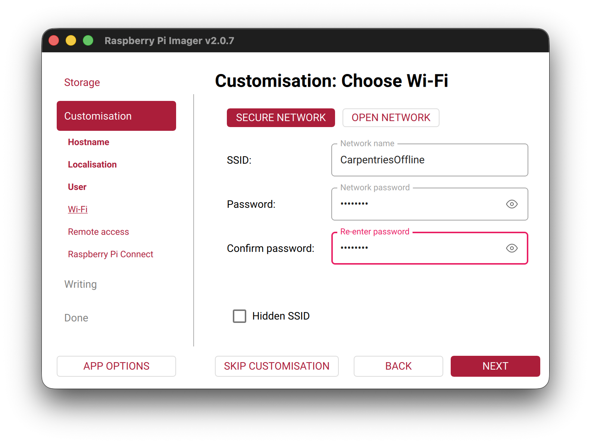
Then on the “Remote Access” page, enable SSH with password authentication (alternatively, by adding a ssh public key).
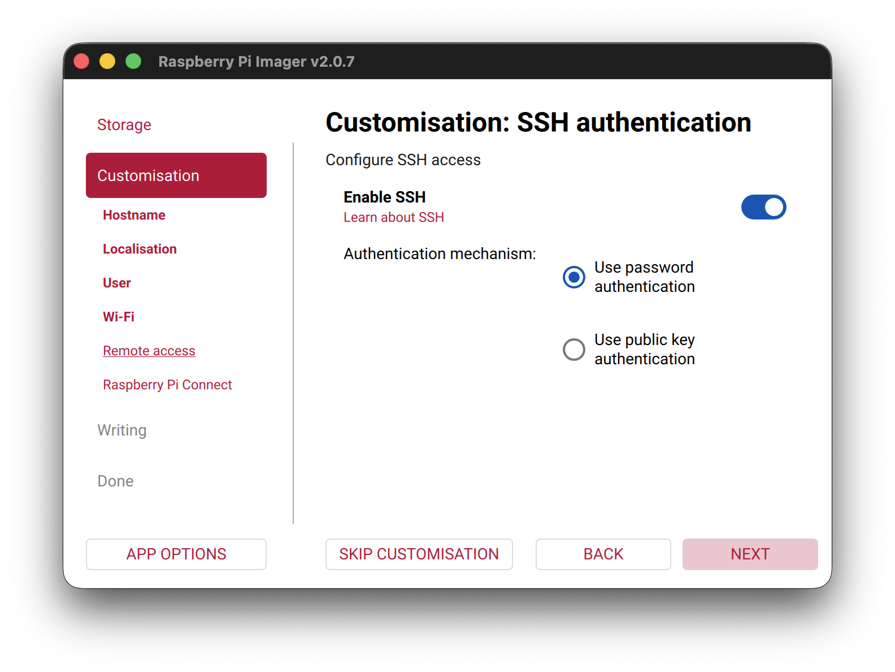
After, saving this, select NEXT to apply the
configuration. We can skip the final screen on setting up Raspberry Pi
Connect.
Confirm writing to the sdcard (please backup any data on the sdcard, any existing data will be LOST!)
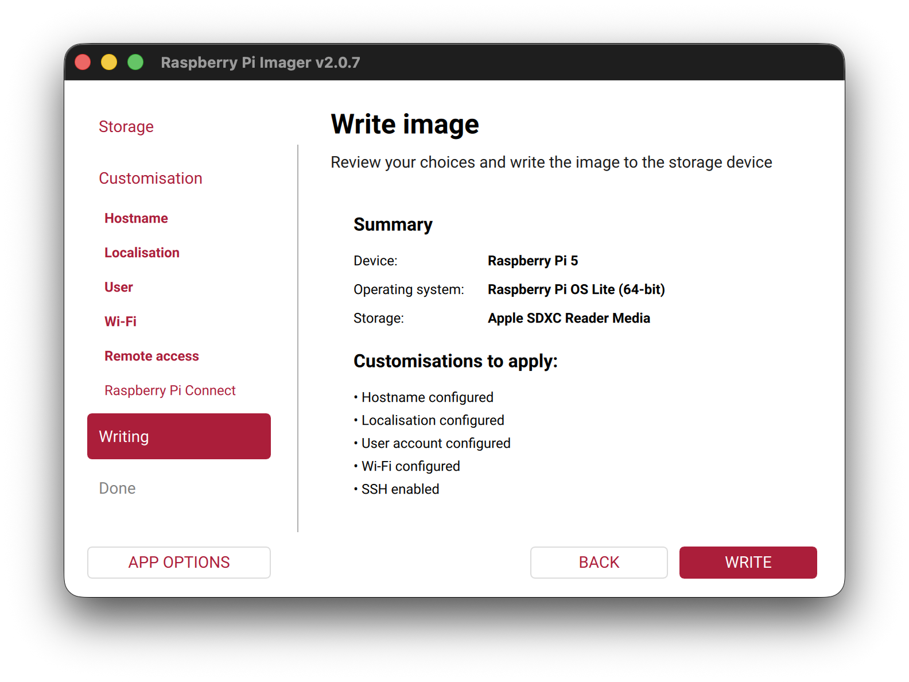
Once the image has been written to the SD card a Write Successful message will be displayed. You can now remove the SD card from your computer and insert it into the Raspberry Pi.
- The Raspberry Pi Imager tool writes OS images to SD cards and supports pre-configuration before first boot
- Configure hostname, username, password, SSH, and WiFi in the Imager to save manual setup time after booting
Content from Booting and Updating
Last updated on 2026-06-19 | Edit this page
Overview
Questions
- How do you connect to a freshly booted Raspberry Pi on the network?
- What are the first steps after logging in for the first time?
Objectives
- Find a Raspberry Pi on the network using
ping - Log in to the Pi via SSH
- Update and upgrade the OS packages
Running the OS for the first time
Once you have written the operating system to the microSD card you can insert the card into the RPi and switch it on. If you configured the OS with a Wifi SSID and enabled ssh you should be able to access the RPi via the wireless network using your desktop or laptop computer.
::: callout First boot takes longer than usual
On its very first boot, the Pi automatically expands the root
filesystem to fill the SD card. This can take a minute or two, during
which the network interface will not yet be up. Wait until
ping node01.local succeeds before attempting to SSH in.
:::
How do I find my IP address?
In the setup stage, you connected your Pi to the
CarpentriesOffline WiFi network and gave each node a name,
for example node01. You can use the ping
command to check it is connected to the network:
BASH
❯ ping -c1 node01.local
PING node01.local (192.168.1.48): 56 data bytes
64 bytes from 192.168.1.48: icmp_seq=0 ttl=64 time=27.346 ms
--- node01.local ping statistics ---
3 packets transmitted, 3 packets received, 0.0% packet loss
round-trip min/avg/max/stddev = 8.019/9.380/11.158/1.315 msThis performs a DNS lookup with the router and resolves the DNS
address, node01.local to its dynamically-assigned IP
address (here 192.168.1.48), then sends an ICMP “ping”
packet to ensure we can reach it on the network.
::: discussion Trouble connecting to your Pi?
.local hostnames resolve automatically on macOS and
Linux. On Windows they can be unreliable. If
ping node01.local is failing, even after waiting a little
while for the system to expand the root partition, try the following in
order:
Check you are using your Pi’s actual hostname: the examples in this lesson use
node01, but you (or we) may have given yours a different name in the Raspberry Pi Imager. Check the label on your Pi, or ask your neighbour what name they set, and make sure yourpingandsshcommands use that name rather than the example from the instructions.-
Try SSH by name anyway: even if
pingfails, SSH sometimes resolves.localnames independently. Some routers also support bare hostnames without the.localsuffix, so it is worth trying both: Reboot the Pi: if it failed to join the WiFi on first boot, a reboot usually fixes it. Wait a minute, reboot, then try again.
-
Use a network scanner: these free GUI tools list every device on your network along with its IP address. Look for a device named
node01:Windows / macOS / Linux: Angry IP Scanner
Windows only: Advanced IP Scanner
-
Command line (all platforms):
nmap -sn 192.168.1.0/24(requires package install)Installing nmap
Platform Command Windows (PowerShell) winget install nmapmacOS brew install nmapDebian / Ubuntu sudo apt-get install nmapFedora / RHEL sudo yum install nmap
Once you have the IP address, use it in place of the hostname:
Ask your instructor: they can find the IP address from the router.
:::
.local resolution failures are most common on Windows.
Linux learners in the same group are usually unaffected and can confirm
the Pi is up. If a group is stuck, look up the Pi’s IP from the router
interface and give it to them directly — this is the fastest recovery
path.
Consider using a serial KVM controller software such as kvm-serial and HDMI capture interface to connect directly to the console of the user’s Raspberry Pi. The login screen prints the IP directly to the display.
Logging in to the Pi
Use SSH or login with a local console (if you have a monitor attached). Use the login details you used above to log into the Pi.
In section 2, we set our username in the Raspberry Pi Imager to
pixie, and the password set there was
0nl1n3.
Logging in should look something like this in your terminal:

Updating the software
Now you are connected, do an update and a full-upgrade:
- Use
ping node01.localto confirm a Pi is reachable on the network before connecting - SSH with
ssh <username>@<ip-address>to log in - Always update packages with
sudo apt update && sudo apt full-upgrade -ybefore installing software
Content from Configuring the login node
Last updated on 2026-06-19 | Edit this page
Overview
Questions
- What roles does the login node play in an HPC cluster?
- How does a login node provide network access to compute nodes?
Objectives
- Configure the login node as a NAT gateway using iptables
- Assign a static IP address to the ethernet interface using
nmcli - Configure dnsmasq to provide DHCP and DNS to the cluster network
- Set up NFS to export shared filesystems to compute nodes
- Configure munge authentication
- Install and configure Slurm on the login node
- Install EESSI for a shared software environment
Configure the login node first
The compute node configuration (next page) depends on files generated here (munge key, slurm.conf, /etc/hosts), and the login node must be up and running as the DHCP/DNS server before the compute node can reach the network.
Tutorial design
We won’t configure a separate control node in this tutorial: the login node will act as the SLURM controller, the NFS backing filesystem, and the cluster’s internet gateway, too. In a production cluster these would typically be separate machines, but combining them means we can demonstrate all the techniques using just two nodes. We’ll also leave multi-user systems and authentication (Kerberos, LDAP and friends) as an exercise to the reader.
In this section, we will configure our login node. This is the node through which we will interface with our cluster.
Check the hostname (and fix if required)
Check your hostname first
Hostname resolution must be in place before running any
sudo command, otherwise every sudo invocation
will print unable to resolve host node01.
Back in section 3, we configured the hostname for the node in the
imaging tool. It’s worth checking the hostname is set correctly: your
login node should end 01, and your compute node
02.
It is important that the hostname is correct. If you need to modify it, run:
Then use the arrow keys and “Enter” to select “01 System Options” then “S4 Hostname”. Enter your corrected hostname and apply changes.
You can alternately accomplish this by editing
/etc/hostname. However, on Debian Bookworm (modern
Raspberry Pi OS), cloud-init manages this file and your
change will be lost on reboot. You can tell it to respect your changes
by setting preserve_hostname to true:
Start with an update
Install required packages
This command will install the required packages (and some suggested ones we like to have on hand) onto your Pi:
BASH
sudo apt-get install -y nfs-kernel-server nfs-common slurm slurm-wlm munge \
libmunge-dev libmunge2 iptables iptables-persistent dnsmasq libopenmpi-dev \
libopenmpi40 lmod build-essential python3-pip net-tools bind9-dnsutils \
ansible nmap git htop screen vim Be careful when copying this command that you don’t introduce any
trailing spaces after the / symbol. This tells bash that
the command continues on the next line, but it won’t work if there’s
whitespace after it.
A dialog block will appear on the screen. Answer yes to both questions.
Package versions and compatibility
On older Raspberry Pi OS releases, libpmix2,
libpmix-bin, and libpmix-dev were separate
packages. PMIx packages were merged into OpenMPI in Debian Bookworm: use
libopenmpi40 and libopenmpi-dev instead.
If libopenmpi40 isn’t available, try
libopenmpi3t64 instead. You’ll know you hit this issue if
you see: E: Unable to locate package libopenmpi40. We have
noticed that on older Pis (1B, 2B), only the legacy OpenMPI package is
installable: this is because these use 32-bit armhf
CPUs.
| Package | Purpose |
|---|---|
nfs-kernel-server |
NFS server: exports the shared filesystem to compute nodes |
nfs-common |
NFS client utilities, also needed on the login node |
slurm slurm-wlm
|
Slurm workload manager: schedules and dispatches jobs across the cluster |
munge |
Authentication service used by Slurm daemons to verify messages |
libmunge2 libmunge-dev
|
MUNGE shared library and development headers |
iptables iptables-persistent
|
Firewall and NAT rules: persistent saves them across reboots |
dnsmasq |
Lightweight DHCP and DNS server: assigns IPs to compute nodes |
libopenmpi-dev libopenmpi40
|
OpenMPI runtime and headers: provides PMIx support for Slurm job launch |
python3-pip |
Python package installer |
lmod |
Lua-based module system for managing software environments (e.g. EESSI) |
build-essential |
Compilers and build tools (gcc, make,
etc.) |
net-tools |
Legacy networking tools (ifconfig,
netstat, etc.) |
bind9-dnsutils |
DNS utilities (dig, nslookup): useful for
verifying DNS resolution |
ansible |
Automation tool for configuring compute nodes in bulk |
nmap |
Network scanner: useful for verifying compute nodes are reachable |
git |
Version control |
htop |
Interactive process viewer |
screen |
Terminal multiplexer: keeps sessions alive over SSH |
vim |
Text editor |
Now, we can remove any redundant packages left over after our upgrades and package installations:
This stage can take quite a long time on older hardware (Pi 2Bs or Pi 3s, for instance). The hardware in the workshop uses Raspberry Pi 5s, so shouldn’t keep you waiting too long.
Set up cluster networking
Compute clusters are usually set up so that users cannot access compute nodes directly from the public internet. We’ll do that too. Our login node’s WiFi connection will be used as the gateway to the world, and we’ll later disable WiFi on our compute nodes. This means that our login node is also acting as a router / internet gateway for the purposes of our tutorial.
Alternative uplink interfaces
We don’t have to use wlan0 for this: we could connect a
USB Ethernet dongle and use eth1 as our upstream link
instead. In any case, the concept to demonstrate here is that our
compute nodes are physically isolated from HPC users at a network
level.
Enable IP forwarding
By default, Linux drops packets that arrive on one interface but are destined for another network. Enabling IP forwarding tells the kernel to route those packets instead of discarding them.
Create a drop-in configuration file so the system setting is not mixed with distribution defaults:
sudo sysctl --system applies all drop-in files
immediately, so a reboot is not required.
Configure IP-tables
We will configure NAT masquerading to control the network topology of our cluster.
BASH
sudo iptables -t nat -A POSTROUTING -o wlan0 -j MASQUERADE
sudo iptables -A FORWARD -i eth0 -o wlan0 -j ACCEPT
sudo iptables -A FORWARD -i wlan0 -o eth0 -m state --state RELATED,ESTABLISHED -j ACCEPT
sudo netfilter-persistent saveHere’s what each rule does:
sudo iptables -t nat -A POSTROUTING -o wlan0 -j MASQUERADE
This is NAT masquerading. Packets leaving via wlan0 (the
upstream internet interface) have their source IP rewritten to the login
node’s wlan0 address. This lets compute nodes reach the
internet via eth0 on the login node: their traffic appears
to come from the login node.
sudo iptables -A FORWARD -i eth0 -o wlan0 -j ACCEPT
Allows packets to be forwarded from eth0 (the cluster
network) out to wlan0 (internet). Without this, the kernel
would drop traffic trying to cross interfaces even if IP forwarding is
enabled in sysctl.
sudo iptables -A FORWARD -i wlan0 -o eth0 -m state --state RELATED,ESTABLISHED -j ACCEPT
The return-traffic rule. Allows packets coming back from the internet
(wlan0) into the cluster (eth0), but only for
connections that were already established or are related to an existing
connection (e.g. FTP data channels). New inbound connections from the
internet are dropped.
Together, these three rules implement a basic NAT gateway: compute nodes can reach the internet through the login node, but the internet cannot initiate connections into the cluster.
Configure the network interfaces
Do not edit /etc/network/interfaces on
current Raspberry Pi OS (Bookworm). That file is not used when
NetworkManager is active, and mixing the two causes unpredictable
behaviour. Use nmcli instead.
The login node needs a fixed IP on its ethernet
interface (eth0) so the compute nodes always reach it at
the same address, and so dnsmasq can hand out leases reliably. Ethernet
interfaces must be set to “unmanaged” in the sense that they carry a
static address rather than requesting one via DHCP: NetworkManager still
controls the interface, but DHCP is disabled for it.
BASH
sudo nmcli con add type ethernet ifname eth0 con-name eth0-static \
ipv4.method manual \
ipv4.addresses 192.168.5.101/24 \
ipv4.dns 192.168.5.101 \
connection.autoconnect yes
sudo nmcli con up eth0-staticNeed to reverse this for any reason?
sudo nmcli con delete eth0-static removes the static
connection and returns eth0 to DHCP.
Previous versions of this tutorial used eth0 as the
gateway interface, routing outgoing traffic back over
192.168.5.101. This has been updated to use
wlan0 so that the cluster network can reach the internet.
As such, we don’t set an ipv4.gateway on this
connection.
Verify the address is set:
You should see a static address of 192.168.5.101
assigned to eth0. Your SSH connection to the Pi is running
through wlan0 at this point:

How to modify the hostname (if required!)
If you followed section 2 correctly, your hostname will already be set. However, if you need to modify it for any reason, you can do so with the following command:
This hostname must match the value used in the
config files below, particularly /etc/hosts and
/etc/slurm/slurm.conf. Take extra care when editing these
files that they match the values for your login and compute node
hostnames.
Configure DHCP
Configure dhcp by entering the following in the file
/etc/dhcpd.conf
BASH
interface eth0
static ip_address=192.168.5.101/24
static routers=192.168.5.101
static domain_name_servers=192.168.5.101Tip
You can populate the files in this section however you’d like.
However, one of the easier patterns is using heredocs with
sudo tee filename, e.g.:
Make sure you replace somefile.conf with the file you’re
trying to write.
Don’t just copy-paste this block: it’s here to help you understand the method. You may find it helpful to use a text editor to help you prepare these commands before pasting them in.
Configure DNS masquerading
First, retrieve the ethernet MAC address of your compute node. If it is already on the network over WiFi, you can do this from the login node, or from your laptop:
Look for the link/ether line: the MAC address is the six
colon-separated hex pairs, e.g. b8:27:eb:6e:7d:6d.
Now configure dnsmasq by entering the following in
/etc/dnsmasq.conf, substituting your compute node’s MAC
address into the dhcp-host line:
BASH
interface=eth0
bind-dynamic
domain-needed
bogus-priv
dhcp-range=192.168.5.102,192.168.5.200,255.255.255.0,12h
dhcp-option=3,192.168.5.101 # default route (the login node)
dhcp-option=6,192.168.5.101 # DNS server
dhcp-host=b8:27:eb:6e:7d:6d,192.168.5.102 # compute node assignmentDon’t copy-and-paste this block without altering it to match your MAC address!
Restart dnsmasq to apply the config:
Verify it is now listening on the DHCP port:
You should see dnsmasq bound to port 67.
Configure NFS
Next we want to configure some shared filesystem space that all nodes can access.
First we’ll create a shared directory on our login node, which here is acting as our backing filestore. This would be a separate filesystem server in reality, using an HPC-class filesystem like Lustre.
Configure shared drives by adding the following at the end of the
file /etc/exports
BASH
/sharedfs 192.168.5.0/24(rw,sync,no_root_squash,no_subtree_check)
/home 192.168.5.0/24(rw,sync,no_root_squash,no_subtree_check)Then apply the exports:
You should see both /sharedfs and /home
listed. We don’t need to restart the NFS service here.
Configure hosts file
On current Debian (Bookworm and later), cloud-init manages
/etc/hosts and will overwrite direct edits on reboot. Edit
the template instead:
/etc/cloud/templates/hosts.debian.tmpl.
dnsmasq reads the login node’s /etc/hosts
and serves those entries as DNS to all cluster nodes, so this is the
only place you need to maintain hostname-to-IP mappings for the cluster.
Compute nodes will receive the login node’s address as their DNS server
via DHCP.
The template already contains entries to create this node’s hostname.
Append the cluster IP entries below it. Add the following to
/etc/cloud/templates/hosts.debian.tmpl, substituting your
cluster name:
Don’t copy-and-paste this block without altering it to match your
cluster name! (orange, black,
green, blue, etc.).
Now we can apply the template to /etc/hosts immediately,
then reload dnsmasq so it picks up the new entries:
Configure munge
Munge is the authentication service we’ll be using in our Pi HPC cluster. We need to do some configuration here first.
Create the munge key using the mungekey tool, which
handles size and permissions correctly:
Verify ownership and permissions:
Configure Slurm
Add the following to /etc/slurm/slurm.conf. Again,
change all occurences of pixie in this script to
the name of your cluster. We use a two-digit node identifier
here (pixieNN) for simplicity but SLURM can easily be
configured to use more.
CONF
SlurmctldHost=pixie01(192.168.5.101)
MpiDefault=none
ProctrackType=proctrack/cgroup
#ProctrackType=proctrack/linuxproc
ReturnToService=1
SlurmctldPidFile=/run/slurmctld.pid
SlurmctldPort=6817
SlurmdPidFile=/run/slurmd.pid
SlurmdPort=6818
SlurmdSpoolDir=/var/lib/slurm/slurmd
SlurmUser=slurm
StateSaveLocation=/var/lib/slurm/slurmctld
SwitchType=switch/none
TaskPlugin=task/affinity
InactiveLimit=0
KillWait=30
MinJobAge=300
SlurmctldTimeout=120
SlurmdTimeout=300
Waittime=0
SchedulerType=sched/backfill
SelectType=select/cons_tres
SelectTypeParameters=CR_Core
AccountingStorageType=accounting_storage/none
# AccountingStoreJobComment=YES
AccountingStoreFlags=job_comment
ClusterName=pixie
JobCompType=jobcomp/none
JobAcctGatherFrequency=30
JobAcctGatherType=jobacct_gather/none
SlurmctldDebug=info
SlurmctldLogFile=/var/log/slurm/slurmctld.log
SlurmdDebug=info
SlurmdLogFile=/var/log/slurm/slurmd.log
PartitionName=pixiecluster Nodes=pixie[02-02] Default=YES MaxTime=INFINITE State=UP
RebootProgram=/etc/slurm/slurmreboot.sh
NodeName=pixie01 NodeAddr=192.168.5.101 CPUs=4 State=IDLE
NodeName=pixie02 NodeAddr=192.168.5.102 CPUs=4 State=IDLEYou’re starting to get used to this warning, but please, don’t copy-and-paste this block without altering it to match your hostname!
Adapting for mixed hardware at home
If you’re trying this at home with a mixed bag of hardware, bear in
mind that only Pi 3 and later run a 64-bit OS. Pi 1Bs (ARMv6) and most
Pi 2Bs (ARMv7) are 32-bit and can run slurmd but can’t use
EESSI. Slurm has features to work around this: NodeName
entries accept a Feature= tag
(e.g. Feature=64bit). Jobs can then request specific node
types with --constraint=64bit, ensuring they are routed to
capable nodes.
Next, restart slurm:
slurmd must be restarted after the config is in place.
It is installed earlier but will be in a failed state until now. Munge
must be started first as both daemons depend on it.
At this point, you should see Slurm running if you check using
sudo systemctl status slurmctld:

Install EESSI
BASH
mkdir eessi
cd eessi
wget https://raw.githubusercontent.com/EESSI/eessi-demo/main/scripts/install_cvmfs_eessi.sh
sudo bash ./install_cvmfs_eessi.sh
source /cvmfs/software.eessi.io/versions/2023.06/init/lmod/bashOnly Pi 3 and later are supported by EESSI, as it requires a 64-bit OS.
What we learned
We have now configured the login node from a fresh Raspberry Pi OS install into a functioning HPC head node.
- Updated packages and installed the software stack needed to run a cluster
- Configured the login node as a NAT gateway, using iptables to allow
compute nodes to reach the internet through
wlan0while keeping them hidden from inbound connections - Assigned a static IP (
192.168.5.101) toeth0and configured dnsmasq to serve DHCP and DNS to compute nodes on the192.168.5.0/24subnet - Exported a shared
/homefilesystem over NFS so compute nodes can access user files without copying them - Configured munge so that Slurm daemons on the login and compute nodes can authenticate each other
- Installed and configured Slurm (
slurmctld) to schedule jobs across the cluster - Installed EESSI to provide a shared, architecture-aware software environment
In the next section, we’ll configure a compute node to perform computational work.
- The login node acts as NAT gateway, DHCP/DNS server (dnsmasq), NFS server, and Slurm controller
- iptables NAT masquerading allows compute nodes to reach the internet through the login node’s WiFi
- munge provides authentication between Slurm daemons; all nodes must share the same munge key
- EESSI provides a shared, architecture-aware software environment accessible from all nodes
Content from Configuring a compute node
Last updated on 2026-06-19 | Edit this page
Overview
Questions
- What packages does a compute node need to join the cluster?
- How does the compute node authenticate with the login node?
Objectives
- Install the required packages on a compute node
- Copy the Slurm configuration and munge key from the login node
- Mount the shared filesystem from the login node via NFS
- Start munge and slurmd services
- Disable WiFi once the compute node is connected via ethernet
This section demonstrates how to set up a compute node on your Raspberry Pi, and add it to your cluster.
Flash an SD card as described in episode 2 and give it a name of
node02 where node is the name that you use for
all your nodes in your HPC (e.g. orange,
black, green, blue,
yellow).
Check the hostname (and fix if required)
Check your hostname for your compute node ends 02. We
covered this in more depth in the last section, so refer back to that
for more info. In short, check it with the command
hostname, and edit with sudo raspi-config if
it is incorrect.
No changes to /etc/hosts are needed on the compute node.
Cluster-wide hostname resolution (all nodes resolving each other by
name) is provided by dnsmasq on the login node and IP addresses are
delivered to compute nodes via DHCP. The hostname for the compute node
is all that is needed locally.
Tip
You can confirm the login node has seen this compute node and issued it a DHCP lease by running the following on the login node (try it!):
Each line is an active lease: expiry timestamp, MAC address, assigned
IP, hostname, and client ID. Your compute node should appear with the IP
you reserved for it in /etc/dnsmasq.conf by setting a
dhcp-host line with the MAC address for the compute
node.
This is also a useful way to check IP addresses assigned to cluster
nodes if they aren’t ending up where you expected, and you can even edit
the file and delete lines to clear DHCP leases for clients if they have
the wrong IP address (for example, if their MAC address wasn’t added to
/etc/dnsmasq.conf on the login node).
Start with an update
We need to update packages on the compute nodes, too:
Network Interface Priority
When you have multiple network adapters attached to a computer, the computer needs to know which interface to route traffic over. This is selected based on the priority of the interface.
During initial setup, while both wlan0 and
eth0 are connected, your Pi can get confused about which
interface to use for internet traffic. If packages aren’t downloading,
give wlan0 a higher interface priority. Grab the device
name from nmcli:
BASH
pi@node02:~ $ nmcli con show
NAME UUID TYPE DEVICE
netplan-wlan0-CarpentriesOffline e5799f3d-8920-3080-b93f-e6e5ac4ce778 wifi wlan0
netplan-eth0 75a1216a-9d1a-30cd-8aca-ace5526ec021 ethernet eth0
lo c4c925ab-c23d-4a84-86f3-bb9133a05b92 loopback loThen give wlan0 a higher interface metric:
BASH
sudo nmcli con mod netplan-wlan0-CarpentriesOffline ipv4.route-metric 100
sudo nmcli con down netplan-wlan0-CarpentriesOffline && sudo nmcli con up netplan-wlan0-CarpentriesOfflineOnce wlan0 is disabled at the end of this tutorial, the
compute node routes all traffic through eth0 to the login
node, which provides internet access via its own wlan0.
Install required packages
ntp and ntpdate are no longer available on
current Raspberry Pi OS. Use ntpsec and
ntpsec-ntpdate instead; they provide the same
functionality.
| Package | Purpose |
|---|---|
slurmd |
Slurm compute node daemon: executes jobs dispatched by the login node |
slurm-client |
Slurm client tools (srun, sbatch,
squeue, etc.) |
munge |
Authentication service used by Slurm to verify inter-node messages |
ntpsec |
NTP time synchronisation daemon: keeps node clocks in sync with the login node |
ntpsec-ntpdate |
One-shot time sync command, useful for initial clock correction on first boot |
lmod |
Lua-based module system for loading software environments (e.g. EESSI) |
nfs-common |
NFS client utilities to mount the shared filesystem from the login node |
vim |
Text editor that confuses people trying to exit it. Try
:q if stuck. |
Verify that slurmd installed and the service unit is
present:
:: caution systemctl should show that Slurm is
installed, but not configured yet. This is OK for now! We haven’t
configured it yet, so it will be in a failure state:
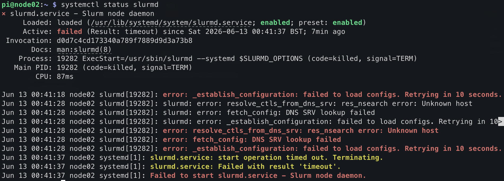
::If slurmd is not found, the package may have been
silently skipped during install. Run the install command again with only
slurmd to confirm:
Create a mount point for the shared drive
Copy configuration files from the login node
1. Slurm configuration files
Copy the slurm config from the login node to
/etc/slurm/slurm.conf:
On login node:
scp /etc/slurm/slurm.conf pi@node02.local:slurm.conf-
On compute node:
2. Munge key
Copy /etc/munge/munge.key from the login node to the
compute node:
On login node:
BASH
sudo cp /etc/munge/munge.key munge.key
sudo chown pi:pi munge.key && chmod 664 munge.key
scp munge.key pi@node02.local:munge.key
rm munge.keyOn compute node:
BASH
sudo mv munge.key /etc/munge/munge.key
sudo chmod 400 /etc/munge/munge.key
sudo chown munge: /etc/munge/munge.keyTip
munge.key is owned by root with permissions
400, so scp cannot read it directly as the
pi user. The steps above copy it to the home directory
first and relax the permissions just long enough to transfer it, then
clean up the temporary copy.
3. Filesystem table (fstab)
Update /etc/fstab to show the following:
BASH
# Leave these lines alone:
proc /proc proc defaults 0 0
PARTUUID=3e3e7392-01 /boot/firmware vfat defaults 0 2
PARTUUID=3e3e7392-02 / ext4 defaults,noatime 0 1
# Append these lines:
192.168.5.101:/sharedfs /sharedfs nfs defaults 0 0
192.168.5.101:/home /home nfs defaults 0 0Then reload the modifications and mount everything:
Slurm cgroups configuration
Slurm’s cgroup plugin is used by slurmd to enforce
resource limits on jobs. We need to configure this on our compute nodes.
Create /etc/slurm/cgroup.conf:
BASH
sudo tee /etc/slurm/cgroup.conf << 'EOF'
CgroupPlugin=autodetect
ConstrainCores=yes
ConstrainRAMSpace=yes
EOFAnd /etc/slurm/cgroup_allowed_devices_file.conf:
BASH
sudo tee /etc/slurm/cgroup_allowed_devices_file.conf << 'EOF'
/dev/null
/dev/urandom
/dev/zero
/dev/sda*
/dev/cpu/*/*
/dev/pts/*
/dev/shm
EOFThis should be a reasonable default configuration, but for a deeper
dive, see (the Slurm cgroups documentation)[https://slurm.schedmd.com/cgroups.html]
Start munge and slurmd
Now that the config files are in place, start munge first (slurmd depends on it), then slurmd:
slurmd should now show active (running). If
it still fails, check the log for details:
Install EESSI
BASH
mkdir eessi
cd eessi
wget https://raw.githubusercontent.com/EESSI/eessi-demo/main/scripts/install_cvmfs_eessi.sh
sudo bash ./install_cvmfs_eessi.sh
source /cvmfs/software.eessi.io/versions/2023.06/init/lmod/bash
# Older versions of EESSI needed us to put the source line into profile:
# echo "source /cvmfs/software.eessi.io/versions/2023.06/init/bash" | sudo tee -a /etc/profile
# We don't need to do this any moreDisable WiFi and Bluetooth
Unlike the login node (which keeps wlan0 as its internet
uplink), the compute node can now disable WiFi. All traffic will route
through eth0 to the login node and out via its
wlan0 connection.
sudo nmcli con down netplan-wlan0-CarpentriesOffline
should take down the default network configured in the Raspberry Pi
Imager software. However, we can permanently disable the hardware for
the built-in WiFi chip in the boot configuration file.
Open /boot/firmware/config.txt and add the following two
lines at the bottom in the [all] section.
Save the file and reboot! You now have a configured compute node. In
the next section, we’ll test our cluster by submitting jobs with
slurm.
- The compute node must have the same munge key as the login node for Slurm authentication
- Copy
slurm.confandmunge.keyfrom the login node before startingslurmd - Mount shared filesystems via NFS entries in
/etc/fstab - Disable WiFi on compute nodes so all traffic routes through
eth0to the login node
Content from Some extra things that can be done
Last updated on 2026-06-17 | Edit this page
Overview
Questions
- How can you provision additional compute nodes without repeating the full setup?
- What is PXE booting and how does it help scale a cluster?
Objectives
- Create a disk image of a configured compute node using
dd - Set up PXE booting to allow nodes to boot from the network
Making an image of the compute node OS
- On a Linux laptop (or with a USB SD card reader) take an image of this:
- Copy node.img to the master Raspberry Pi’s home directory.
Setup PXE booting
Download the pxe-boot scripts:
Initalise a PXE node:
for example:
This will create an entry with the serial number in /pxe-boot and /pxe-root.
- Copy the Slurm config to the node filesystems
Test PXE booting
- Boot up a client
- Run sinfo to see if the cluster is working
You should see something like:
Links
- https://www.clearlinux.org/clear-linux-documentation/tutorials/hpc.html
- https://www.quantstart.com/articles/building-a-raspberry-pi-cluster-for-qstrader-using-slurm-part-3/
-
ddcan create an exact disk image of a configured compute node SD card, which can then be written to new cards - PXE booting allows compute nodes to load their OS from the network, removing the need for individual SD cards
Content from Testing & running your first job
Last updated on 2026-06-17 | Edit this page
Overview
Questions
- How do you verify that a Slurm cluster is working correctly?
- How do you submit and monitor batch jobs?
Objectives
- Check cluster health using
sinfo - Submit a batch job with
sbatchand monitor it withsqueue - Run an interactive job using
srun - Verify the shared filesystem works across nodes
Before submitting any work, verify that the cluster is healthy and all nodes are visible to the scheduler.
Check cluster status
From the login node, run:
You should see your compute node listed as idle:
PARTITION AVAIL TIMELIMIT NODES STATE NODELIST
pixiecluster* up infinite 1 idle pixie02If the node shows down or unknown, check
that slurmd is running on the compute node:
Submit a minimal batch job
Create a file called hello.sh:
BASH
#!/bin/bash
#SBATCH --job-name=hello
#SBATCH --output=hello-%j.out
#SBATCH --ntasks=1
echo "Hello from $(hostname) at $(date)"Submit it:
Slurm will print a job ID,
e.g. Submitted batch job 1.
Check job status
While the job is running you will see it listed. Once it completes
the queue will be empty. Check the output file (replace 1
with your job ID):
Expected output:
Hello from pixie02 at Fri Jun 13 10:00:00 BST 2026The hostname should be your compute node, not the login node.
Run an interactive job
For debugging it is often useful to get a shell directly on a compute node:
Your prompt will change to reflect the compute node hostname. Type
exit to return to the login node.
Test the shared filesystem
Jobs can read and write to /sharedfs from any node.
Verify this round-trips correctly:
BASH
#!/bin/bash
#SBATCH --job-name=sharedfs-test
#SBATCH --output=sharedfs-%j.out
#SBATCH --ntasks=1
echo "written by $(hostname)" > /sharedfs/test.txt
cat /sharedfs/test.txtAfter the job completes, confirm the file is visible from the login node:
Test a multi-node job
If you have more than one compute node, verify that Slurm can span them:
BASH
#!/bin/bash
#SBATCH --job-name=multinode
#SBATCH --output=multinode-%j.out
#SBATCH --ntasks-per-node=1
#SBATCH --nodes=2
srun hostnameThe output file should contain one line per node.
- Use
sinfoto check that all nodes are visible and inidlestate before submitting jobs -
sbatchsubmits batch jobs;squeuemonitors the queue; job output goes to the file specified by--output -
srun --pty bashopens an interactive shell on a compute node for debugging
Content from Preparing compute nodes for eessi
Last updated on 2026-06-17 | Edit this page
Overview
Questions
- What is a loop device and when is it needed?
- How do you create persistent storage for a diskless compute node?
Objectives
- Create a large file with
ddto act as a virtual disk - Map the file to a loop device using
losetup - Partition and format the loop device
- Mount the loop device for use by EESSI
Credit to: https://linuxconfig.org/how-to-create-loop-devices-on-linux
To use eessi on diskless compute nodes, we need to
create “pseudo” disk using
-
ddfor creating an empty file, the size of the disk we need. losetuppartedmkfs.ext4mount
Create file
dd if=/dev/zero of=loopdevice bs=1M count=32768
Map the file to a block device
- Determine the next available block device:
-
sudo losetup -f
Map the file calledloopdeviceto the next available block device:
-
sudo losetup -f loopdevice
Create a partition and filesystem
sudo parted -s /dev/loop0 mklabel msdossudo parted -s /dev/loop0 mkpart primary 0% 100%sudo mkfs.ext4 /dev/loop0p1
Mount the file as a drive
sudo mount /dev/loop0 /cvmfs
- Loop devices map regular files to block devices, allowing them to be partitioned and mounted like physical disks
- This provides EESSI with a mountable filesystem at
/cvmfson diskless compute nodes